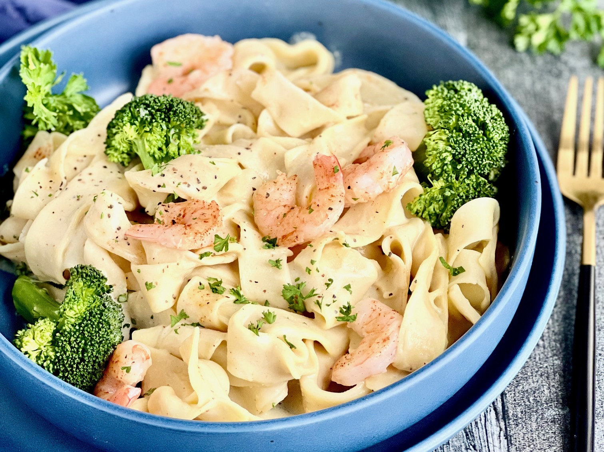

Shrimp and Broccoli Alfredo: A good dish for Dinner
Indulge in a symphony of flavors and textures with our exquisite Shrimp and Broccoli Alfredo.

Incredible Shrimp and Broccoli Alfredo, picture from Wikipedia
Recipe and serving suggestions follow.
Ingredients
1 pound shrimp, peeled and deveined
2 cups broccoli florets
8 ounces fettuccine or your preferred pasta
2 tablespoons butter
2 cloves garlic, minced
1 cup heavy cream
1 cup grated Parmesan cheese
Salt and pepper, to taste
Chopped fresh parsley, for garnish
Method
Instructions:
Cook the pasta: Bring a large pot of salted water to a boil. Add the fettuccine and cook according to package instructions until al dente. Drain and set aside.
Steam the broccoli: In a separate pot, steam the broccoli florets until tender. Drain and set aside.
Cook the shrimp: In a large skillet, melt the butter over medium heat. Add the minced garlic and sauté for about 1 minute until fragrant.
Add the shrimp to the skillet and cook for 2-3 minutes on each side, or until they turn pink and opaque. Remove the shrimp from the skillet and set aside.
Prepare the Alfredo sauce: In the same skillet, pour in the heavy cream and bring to a simmer. Gradually whisk in the grated Parmesan cheese until the sauce is smooth and creamy.
Combine the cooked pasta, steamed broccoli, and cooked shrimp with the Alfredo sauce. Gently toss everything together until well coated. If the sauce is too thick, you can add a splash of pasta water to reach your desired consistency.
Season with salt and pepper to taste.
Serve the Shrimp and Broccoli Alfredo in individual plates, garnished with chopped fresh parsley.